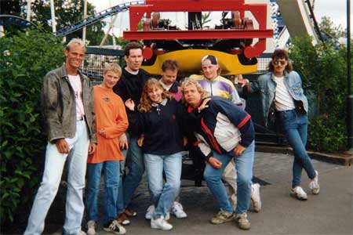

Me and my friends going to Liesberg in 1995
|
Here's
a short introduction about my friends back in Kristianstad. We went to
Liseberg in summer -95. Here's every one that went to Liseberg this time.
Can you figure out which guy thinks he's the coolest, hardest and meanest?
Strangely enough, we could not fit everyone to one car in the Flumride, as
much as we tried :-) Merry-go-rounds can be fun. No matter how old you are, there's always some attraction that that you can enjoy. |